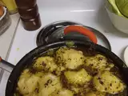

Homemade Dumplings

Description of Homemade Dumplings
A dumpling is a small mass of dough that can be boiled, fried, baked, or steamed. There are a ton of dumpling varieties out there, from pork- and cabbage-filled Chinese dumplings to cheesy Polish dumplings.
Ingredients
- 1 cup all-purpose flour
- 2 teaspoons baking powder
- 1 teaspoon white sugar
- ½ teaspoon salt
- 1 tablespoon margarine
- ½ cup milk
Steps
- Stir together flour, baking powder, sugar, and salt in a bowl.
- Cut in butter until mixture is crumbly. Stir in milk and mix until a batter forms that is thick enough to be scooped with a spoon. Allow batter to rest for 3 to 5 minutes.
- Drop batter by spoonfuls into boiling stew or soup. Cover and simmer without lifting the lid for 15 minutes. Serve.
- Serve hot and enjoy!